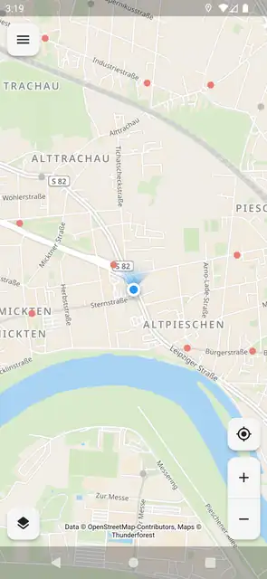
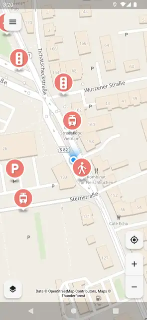

OpenStop
خرائط وسفر
The goal of the app is, with your help, to collect public transport barrier data and make it available on OpenStreetMap so that EVERYONE can benefit from it. By asking simple questions about stops, citizens shall be put in a position to collect data in their vicinity in an accessible manner. The dat
✓ ترخيص مفتوح (GPL-3.0-or-later) · آخر تحديث: 2026-09-20
0.8.7الإصدار
79.3 MBالحجم
GPL-3.0-or-laterالرخصة
Open in Kanzتحميل APK (79.3 MB)
Download APK
SHA-256: 0e848b2e95b0f6cb286164027d0199e8f5d831fd35f075dfbc586b8c3887c486


تطبيقات تانية لنفس المطوّر (2)
More apps from this developer: de.tu_chemnitz
امسح الكود لفتح صفحة التطبيق
Scan to open this app page
لو كنز مش متثبت عندك: نزّل متجر كنز.
Not installed? Get the Kanz store.